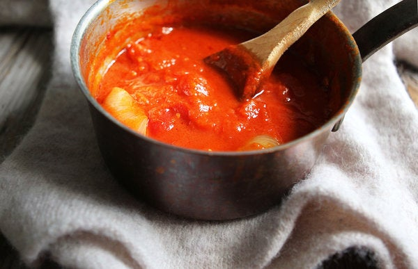

Tomato Sauce★
 4
servings
4
servings 45
minutes
45
minutes Source
Source Vegan
Vegan
Tomato Sauce with Onion and Butter.

2 cupstomatoes, in addition to their juices (for example, a 28-ounce can of San Marzano whole peeled tomatoes)5 tbspbutter1onion, peeled and cut in half- Salt
- Spaghetti pasta, Potato Gnochi or similar (cooked to al dente)
- Freshly grated parmigiano-reggiano cheese for the table
Combine the tomatoes, their juices, the butter and the onion halves in a saucepan. Add a tablespoon of salt.
Place over medium heat and bring to a simmer. Cook, uncovered at a very slow, but steady simmer for 45 minutes. Stir occasionally, mashing any large pieces of tomato with a spoon. Taste and correct for salt.
Discard the onion before tossing the sauce with pasta. You can freeze the sauce, but remember to discard the onion before doing so.